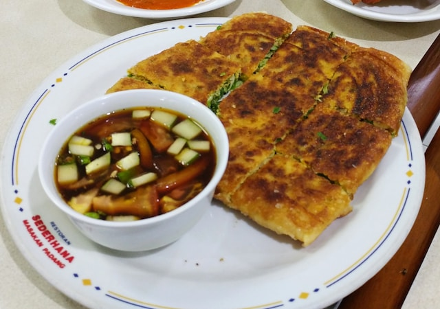

Martabak

Martabak, originating from a Middle Eastern recipe of the same name, are
savory snacks enjoyed in Indonesia. Essentially, it's a spicy omelet
pancake filled with vegetables and minced meat, readily available from
street vendors after sunset. Regions like Palembang, known for Martabak
HAR, and Aceh, with Martabak Aceh, have their unique versions of this
dish. Additionally, there's a sweeter variant known as Martabak Manis
(called ‘Kue Terang Bulan’ in regions like Malang), which is a large
pancake stuffed with toppings such as chocolate, cheese, and peanuts.
Though it might seem complex, Martabak is actually quite simple to make,
with ingredients easily found in local shops.
Ingredients
- 250 g minced beef
- 1 medium onion, peeled and sliced
- 1 small leek, halved lengthwise and sliced
- 1 spring onion, finely sliced
- 3 eggs
- 1 tablespoon of curry powder
- 1/2 teaspoon of cumin powder
- salt and white pepper
Dough
- 100 g plain flour
- 25 g tapioca flour
- 250 ml cold water
- 1/2 teaspoon of salt
How to Make
Filling:
- Sauté onion in vegetable oil for a couple of seconds
- Add the meat and stir-fry until it changes color
-
Then put in leek and continue sautéing for 2 or 3 minutes before adding
curry powder, cumin, salt, and pepper
- Mix all the spices and cook for 3 minutes
- Remove from heat
- Put the fillings in a bowl and add the eggs and spring onion
- Mix well.
Dough:
-
Mix all the ingredients in a bowl until they blend completely without
any lumps
-
Then pour 2-3 tablespoon of the batter into a pre-heated, non-stick
frying pan
- Make sure the dough covers the whole surface of the pan
- Remove when it’s done.
Martabak:
-
Put 2 teaspoons of filling onto the center of the dough, take the skin
and fold in from side to side to completely cover the filling in an
envelope fashion
-
Fry until it turns golden brown on one side and then turns it over to
cook the other side
- Serve warm.
Reference:
Indonesia Travel (Wonderful Indonesia), AI Tools